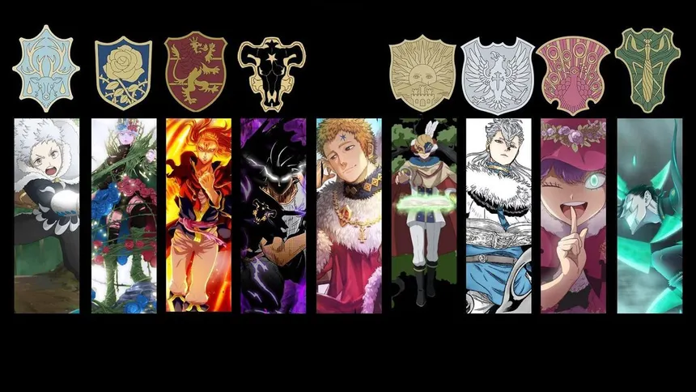

In Black Clover, magic is a big part of everyday life, and almost everyone is born with the ability to use it. There are many different types of magic, such as Fire, Water, Wind, and Earth. When people turn 15, they receive a special book called a Grimoire, which helps them use spells and become stronger. Some people are born with more magic power than others, which can make them stronger. There are also special types of magic that are very rare and powerful. Magic is also used for many things, like fighting, protecting people, and helping with everyday tasks. The stronger and more skilled someone becomes, the more powerful spells they can learn and use.

Magic Squads
In Black Clover, there are nine different squads in the Clover Kingdom called the Magic Knights. Each squad has its own captain and members who use their magic to protect the kingdom and fight against enemies. The nine squads are the Black Bulls, Golden Dawn, Silver Eagles, Crimson Lion Kings, Blue Rose Knights, Green Praying Mantises, Coral Peacocks, Purple Orcas, and Aqua Deer. Asta joins the Black Bulls, which is known for being the worst magic squad. Yuno joins the Golden Dawn, which is known as one of the strongest and most respected squads. People canjoin squads after taking part in the Magic Knights Entrance Exam, where captains choose the people they think are good enough. Even though Asta and Yuno join different squads, they both work hard to become stronger and compete with each other to achieve their dream of becoming the Wizard King.